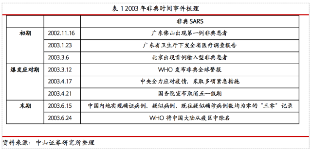
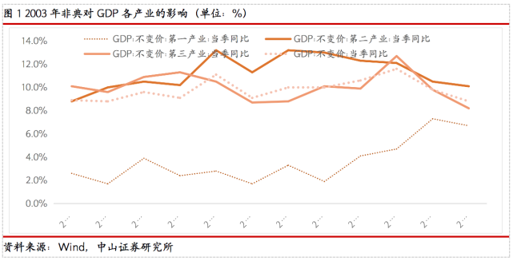
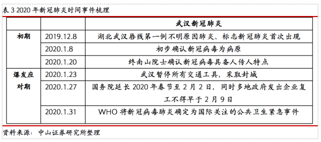
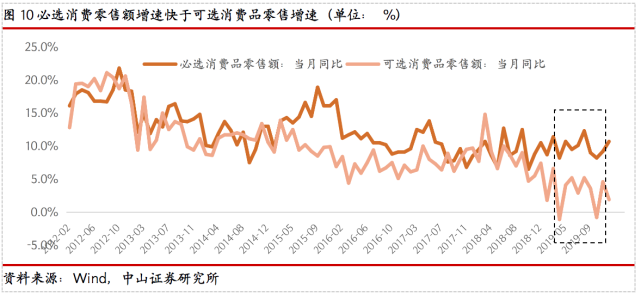

知名研究机构报告：新冠疫情对全球经济影响集中在上半年
原文链接 备份链接 2020年全球GDP年增长率受疫情影响将降低0.2%左右几天前，新西兰渔民们把刚刚捕来的共100多吨大龙虾放生大海。当地媒体报道，中国传统春节是新西兰龙虾出口最畅销的时候，但今年受新冠状病毒疫情影响，中国客户纷纷取消 …
文 | 李湛 蔡娜
2003年的非典疫情影响周期超过半年，期间抑制消费，中国第三产业GDP受波及影响长达两个季度。另一方面，非典疫情影响社会消费数据仅是短期性，待疫情控制后迅速回升。
此次新冠疫情发生于春节旺季，短期影响整体消费市场究竟有多大？新冠疫情的发生，抑制了中国春节期间的旺季需求，叠加民众宅家，不管是整体的外出就餐、还是家庭聚会，此类的消费均被抑制。细分来看，白酒行业在此次疫情影响下，行业商务宴请及个人需求均被抑制，春节旺季需求大幅下滑，而终端消费受阻，行业供给端酒企库存难以消化。大众食品行业，疫情爆发，民众宅家，禁止聚会，餐饮受损较大，同时，年货市场遇冷，其相关的调味品、以休闲食品、啤酒为代表的大众食品均受到影响。
疫情影响下，民众在家，必选消费品业绩优势凸显。我们认为，此次疫情将对中国短期的消费市场造成较大影响，长期来看，春节旺季的食品饮料企业收入一般是占比最大的，因此旺季销量的流失将对大部分企业全年业绩造成影响。中长期来看，疫情推进行业再次洗牌，经营能力强的龙头酒企全年业绩有望得到保证。大众食品行业，疫情影响下，必选消费品优势再次凸显，乳品、家庭调味品、方便食品等龙头企业全年业绩波及有限。
非典疫情影响周期超过半年。根据新闻及数据显示，从2002年11月中旬广东佛山出现首例非典患者，到2003年6月末WHO将中国大陆从疫区中除名，非典事件从始至终影响时间超过半年。

非典疫情对中国第三产业GDP波及影响长达两个季度，控制后企稳回升。2003年非典疫情的爆发，中国GDP增速从第一季度的11.1%下滑至第二季度的9.1%，随着疫情在第二季度末得到控制，中国GDP自第三季度起回升。细分各产业看，影响最大是第二产业，其次是第三产业（最终消费支出）从当年第一季度的10.5%下滑至第二季度的8.7%，非典疫情对中国第三产业波及影响长达两个季度。随后待疫情控制后，中国GDP企稳回升，整体消费在较强的消费力背景下，在第三、第四季度中国第三产业GDP回升至两位数增长，10.1%。

非典疫情影响社会消费数据仅是短期性，待疫情控制后迅速回升。回顾2003年非典期间，中国第三产业GDP受到两个季度影响，而中国社会消费增速仅在疫情爆发应对期间的4月、5月出现断崖式下滑，最低达到5月的4.3%。随后在疫情末期，社会零售增速迅速反弹。另一方面，从消费者信心指数来看，受非典疫情的影响，导致消费信心在爆发期间出现明显下滑，但在疫情得以控制后，作为前瞻性的消费者信心指数再次回升，表明非典疫情对中国消费造成的影响是短期性。


非典疫情抑制消费，必选消费品刚性特性显现。在2003年非典疫情影响下，中国消费需求出现明显分化。必选消费增速是明显快于可选消费增速，消费者对于必选消费品需求基本保持稳健，而可选消费零售总额在爆发期的5月出现明显下跌。另一方面，疫情期间，食品CPI不断，在通胀周期的背景下，CPI与必选消费增速走势较为一致，反映出在需求压力下，必选消费品的刚需特性。


疫情期间，整体板块跑输大盘，细分板块受疫情影响出现分化。根据数据显示，我们可以看出在2003年非典期间，食品饮料整体板块跑输大盘，同时，在爆发的4、5月期间，其走势与沪深300进一步拉开差距。细分子板块来看，可以看出，作为必选消费品乳制品及肉制品跑赢沪深300，与餐饮相关性较高的调味品、白酒、及啤酒板块跌幅较为明显。

白酒整体业绩承压，大众必选消费品企业业绩保持稳健。非典期间，整体消费市场受到影响，不管是白酒还是非白酒企业业绩均出现不同程度的下滑。细分来看，白酒行业中，高端酒企业绩增速较为稳健，次高端及中低端地方酒企受市场需求下降等影响，03Q2业绩不管是营收还是净利润增速均出现下滑。大众食品方面，必选消费品企业业绩增速相对亮眼，乳制品伊利股份及肉制品双汇发展均在非典期间，业绩反而相对收益。

新冠肺炎仍处在爆发应对期。从本次新冠疫情的时间线来看，疫情始于2019年12月8日，截至2月17日24时，此次疫情累计报告确证病例72436例，现有疑似病例6242例，累计死亡病例1868例。目前，政府正在积极应对，民众则通过选择宅在家进行隔离，新型肺炎疫情仍处在爆发应对期。

此次疫情或将对中国第三产业的GDP造成一定影响。对比2003年非典，根据目前中国出口、投资及消费对GDP增长贡献率数据来看，自2008年起，居民消费对GDP的增长拉动越发明显，其已成为中国经济增长的重要推动因素。此前，非典疫情影响中国第三产业的GDP时长达两个季度，因此我们认为此次新冠肺炎将对中国第三产业造成一定影响。

对比非典，此次疫情发生于春节旺季，短期将影响整体消费市场。通过时间线对比两次疫情事件，可以看出，此次新冠疫情与非典疫情有所差异。非典疫情发生于中国消费市场淡季（爆发期于第二季度），而此次疫情发生于2020年的春节期间。新冠疫情的发生，抑制了中国春节期间的旺季需求，叠加民众宅家，不管是整体的外出就餐、还是家庭聚会，此类的消费均被抑制。我们认为，此次疫情将对中国短期的消费市场造成较大影响，长期来看，春节旺季的食品饮料企业收入一般是占比最大的，因此旺季销量的流失将对大部分企业全年业绩造成影响。
对比非典时期白酒行业的整体表现，由于其疫情爆发集中于第二季度，随着疫情得到控制，第三季度消费旺季到来，酒企业绩从第三季度起基本企稳回升，整体动销稳健，酒企业绩波及有限。而此次疫情发生于春节，不管是白酒行业的需求还是供给端均受到较大影响，短期酒企业绩承压。1）需求端：商务宴请及个人需求均被抑制，春节需求基本为零。2）供给端：酒企渠道库存较高，中小酒企持续承压
民众宅家，白酒消费受到抑制。不管是白酒消费端占比最大的商务应酬还是朋友聚会消费，受此次疫情影响，均受到较为严重的影响。细分来看，高端白酒方面，以茅台为代表的高端白酒，受其稀缺特性影响，多以高端送礼及自饮或收藏为主，其需求影响有限。次高端白酒及大众酒，受到餐饮门店关闭，民众不允许出门及拒绝聚餐等多项条理限制，此类白酒消费大幅下降，市场消费旺季转为淡季。

终端消费受阻，短期酒企库存难以消化。白酒行业渠道方面，疫情爆发前，多家酒企已进入春节备货阶段，高端白酒动销表现较为亮眼，酒企春节出货及回款基本提早完成。随着新冠疫情大面积爆发，企业延期复工（酒企及经销商），白酒市场需求大幅萎缩，这使得大部分酒企及经经销商存在较大库存问题，白酒短期实际终端消费受到严重影响。随着春节原本的春节旺季即将结束，马上进入白酒市场的消费淡季，短期内，酒企库存消化受到冲击。
疫情推进行业再次洗牌，经营能力强者为王。此次新冠疫情爆发于春节期间，整体白酒行业业绩受终端消费市场大幅下滑及短期酒企高库存影响，短期内，我们认为酒企节前受提前备货动销良好所致，其业绩影响有限，但春节期间业绩预计将受到冲击。此次疫情不管是对酒企的经营状况还是企业现金流都造成一定影响，细分来看，高端白酒及次高端龙头酒企依靠自身较强的经营能力及优秀得管理团队，通过与经销商共同奋战，将进一步避免出现优质经销商流失、产品价格错乱等问题，企业全年业绩有望得到保证。另一方面，中小酒企由于自身品牌、渠道管控、现金流实力相对较弱，在此次疫情的冲击下，市场份额将会逐步流失，业绩或将持续承压。未来，在疫情得到控制后，市场需求持续分化，行业集中度有望进一步提升，龙头酒企加速消化库存，经营能力进一步加强。
春节期间销售额大幅下降，企业不断寻求出路。疫情爆发，民众宅家，禁止聚会，餐饮受损较大，同时，年货市场遇冷，其相关的调味品、以休闲食品、啤酒为代表的大众食品均受到影响。对比2003年的非典，随着餐饮行业不断创新转变，餐饮行业及大众食品企业均在此次通过无接触配送方式尽力挽回企业营业额。但企业复工推迟，春节期间营业额大幅下降多方面影响，成本端的压力使得大众食品企业短期承压。目前，企业正呼吁政府通过减免租金，推迟缴纳员工五险一金及减税降费等方式帮助企业渡过这次难关。
疫情爆发，必选消费品优势再次凸显。回顾此前非典疫情可以看出，必选消费品成为消费者首选。而对比此次疫情，新冠疫情的爆发影响了整体春节期间大众品销量。叠加随后的封城政策出台、全国民众宅家策略及全国延期复工等政策，无疑对中国短期消费市场造成一定影响，在居民消费能力有限背景下，类似乳品、家庭调味品、方便食品等必选消费品优势再次凸显。

乳品行业：整体来看，乳品行业在2003年非典期间，其波及影响较小。我们预计此次新冠疫情对乳品行业影响主要来自两方面，第一，疫情爆发于春节期间，低线城市的春节礼赠消费将受影响，第二，民众宅家，购物频次相对有所减少，乳品复购率有所下滑。但乳品自身营业价值高，属于民众日常必选消费品，乳企将通过线上渠道，与商场加大合作，通过配送方式可挽救乳品销量。总体来看，我们认为受供应链限制，常温奶销量将强于低温奶销量，而龙头乳企通过自身优势，有望缓解疫情所带来的冲击，全年业绩影响有限。
调味品行业：回顾2003年非典，餐饮行业业绩大幅下滑，传统调味品酱油受到一定负面影响，而醋因传闻具有预防杀菌功效销量剧增。就此次新冠疫情而言，因外出就餐及宴席消费在春节期间明显被抑制，作为调味品行业中餐饮消费占比最重的渠道销量基本折腰再折腰。虽餐饮加速线上渠道布局，打开无接触配送，但受限于供应链及食品安全问题，市场打开有限。另一方面，受民众宅家及企业延期复工等因素影响，中国调味品下游消费渠道占比30%的家庭消费需求增加。总体来看，此次疫情对餐饮端产生较大影响，而以家庭渠道为主的调味品企业受其需求增加影响，企业成本端承压较小，波及有限。
速冻食品行业：在近些年市场规模迅增长的速冻食品行业，受此次疫情影响，餐饮门店关店、企业延期复工中间零售批发市场关门等，其零售额遭到冲击。虽家庭渠道需求增长，但C端的需求增长短时间内无法弥补B端较大的需求量。
休闲综合食品行业：此次疫情对于线上休闲食品波及有限，根据数据显示，线上休闲食品的备货基本在春节前已进入尾声，因此消费者早已购买做好提前囤货，线上休闲食品的春节销量目标基本完成。而作为线下休闲食品，例如卤制品、短保面包及商城门店的礼盒套装，受疫情影响，线下的春节需求均受到一定负面影响。总体来看，此次疫情对于主要以线下销售为主的休闲食品企业冲击较大，未来，随着疫情逐步得以控制，还需不断关注企业对于春节挤压存货的动销情况，业绩方面，我们认为线下渠道门店的休闲食品及中小企业的全年业绩将会受到一定影响。
风险提示：新冠疫情持续时长超预期，行业需求抑制；食品安全出现严重问题，影响消费者购买意愿。
（作者李湛为中山证券首席经济学家，蔡娜为中山证券研究员）
▲点击图片查看更多疫情报道
原文链接 备份链接 2020年全球GDP年增长率受疫情影响将降低0.2%左右几天前，新西兰渔民们把刚刚捕来的共100多吨大龙虾放生大海。当地媒体报道，中国传统春节是新西兰龙虾出口最畅销的时候，但今年受新冠状病毒疫情影响，中国客户纷纷取消 …
原文链接 备份链接 _ 值得大力肯定的是，此次疫情爆发后政策应对果断而有效。但本次疫情也凸显了一些中国医疗体系仍待完善之处，其中也包括医护人员及相关用品的长期短缺的问题等 _ 文 | 梁红 截至2月4日24时，中国内地已确诊24324例新 …
原文链接 备份链接 作者：任尚坤 来源：*商业人物*（ID：*biz-leaders）* 北京时间1月31日凌晨，世界卫生组织召开记者会宣布：新型冠状病毒疫情被列为“国际关注的突发公共卫生事件”（Public Health …
原文链接 备份链接 疫情对全球供应链的影响触及哪一阶段，及其冲击程度，将取决于疫情本身的演变及持续时间。如果疫情对全球供应链冲击推演到第四阶段，那么疫情将升级为严重冲击全球经济的灰犀牛 文 | 徐奇渊 世界银行的世界发展指数（WDI）显 …
原文链接 备份链接 来源：雪球App，作者： 腾讯棱镜深网，（https://xueqiu.com/6718098612/141480733） @今日话题 作者 | 孙宏超 相欣 编辑 | 康晓 出品｜深网·腾讯小满工作室 编者按：通过中 …